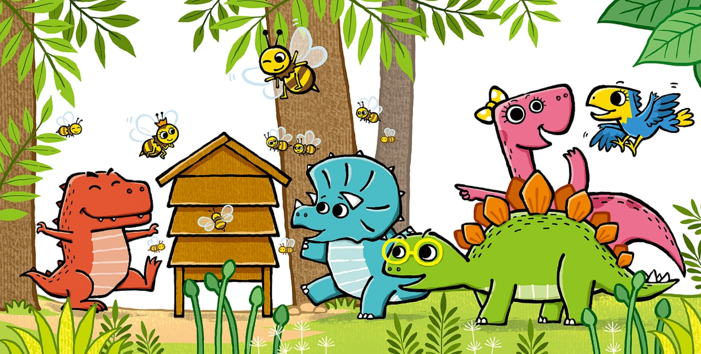

时光是一场无声的远行，山河静默，岁月温良，世间所有美好的景致，都在朝夕更迭里，缓缓舒展成最动人的模样。我们奔走于烟火人间，看四季轮转，观云卷云舒，那些藏在风里、雨里、晨昏里的细碎温柔，终会熨平岁月的褶皱，治愈人间所有慌张。
春日的风，是轻柔的序章。料峭寒意缓缓褪去，东风拂过山河，枯寂的大地便悄然苏醒。堤岸抽新柳，枝头绽繁花，粉嫩的桃、洁白的梨、浅紫的堇，错落点缀在阡陌街巷。春雨淅淅沥沥，细密如丝，漫过青瓦屋檐，浸润干裂的泥土，洗尽尘世尘埃。
雨后的天地澄澈通透，草木带着湿漉漉的生机，远山含黛，近水含烟，每一寸风光，都温柔得恰到好处。春日从不会轰轰烈烈，只是以细碎的生机告诉世人，万物可期，岁月温柔。
夏日的韵，是热烈的清欢。蝉鸣撕开漫长白昼，清风穿过层层叠叠的绿荫，携来草木与泥土的清香.午后的阳光温柔洒落，透过枝叶的缝隙，碎成满地星光。荷塘清盛，碧波荡漾，亭亭荷花立于水中央，出淤泥而不染，携一身清雅，渡一夏清凉。暮色降临，晚风驱散燥热，星河缓缓铺展，萤火点点，晚风簌簌，人间烟火袅袅升起。夏日的美好，藏在晚风、星河、蝉鸣与荷香里，热烈而澄澈，喧嚣亦安然。
白老师
2026-07-01

| 排名 | 关键词 | 趋势 | 今日搜索 | 最近七日 | 相关链接 |
|---|---|---|---|---|---|
| 1 | 鬼吹灯 | 10 | 1000 | 100 | 相关链接 |
| 2 | 盗墓笔记 | 20 | 900 | 120 | 相关链接 |
| 3 | 西游记 | 30 | 800 | 120 | 相关链接 |